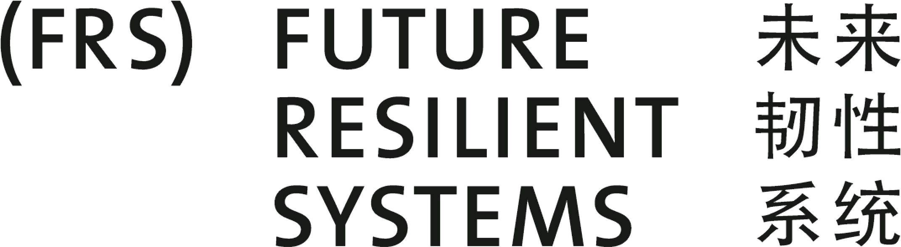
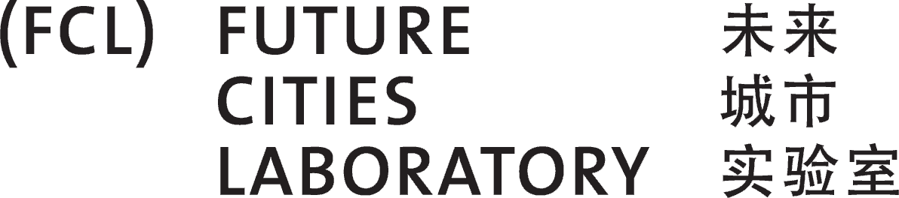

ENSAD Visual Explorer


What is EVE?
The Energy-related Severe Accident Database (ENSAD) is the most comprehensive collection of historical accidents in the energy sector, covering complete energy chains. It was developed and first released by the Paul Scherrer Institut (PSI) in the 1990s, and since then has been continuously updated and extended, both in terms of content as well as scope and features.
This project aims to develeop a web-based Geographic Information System (GIS) to visualize the geographical distribution and analyse the spatio-temporal charcateristics of accidents. The expected result is a web-based ENSAD Visual Explorer (EVE) that allows the public audience to access the ENSAD online with a simple but useful user interface (UI). The EVE visualises and maps the data from ENSAD and also presents graphs by using the data.
Key features
Differentiate Yourself and Attract More Attention Sales and Profits
Joint project of Singapore-ETH Centre & Paul Scherrer Institut
Future Resilient Systems (FRS) & Future Cities Laboratory (FCL) at Singapore-ETH Centre
The Energy-related Severe Accident Database (ENSAD) is the most comprehensive collection of historical accidents in the energy sector, covering complete energy chains. It was developed and first released by the Paul Scherrer Institut (PSI) in the 1990s, and since then has been continuously updated and extended, both in terms of content as well as scope and features.
Paul Scherrer Institut
It was developed and first released by the Paul Scherrer Institut (PSI) in the 1990s, and since then has been continuously updated and extended, both in terms of content as well as scope and features.
Publications
--------------
--------------
--------------
Team
Kim Wansub, Data Specialist
Shiho Asada, UI and Visualisation Designer
Sisi Salia, UI and Visualisation Developer
Peter Burgherr, ENSAD Development&Analysis
Matteo Spada, ENSAD Development&Analysis